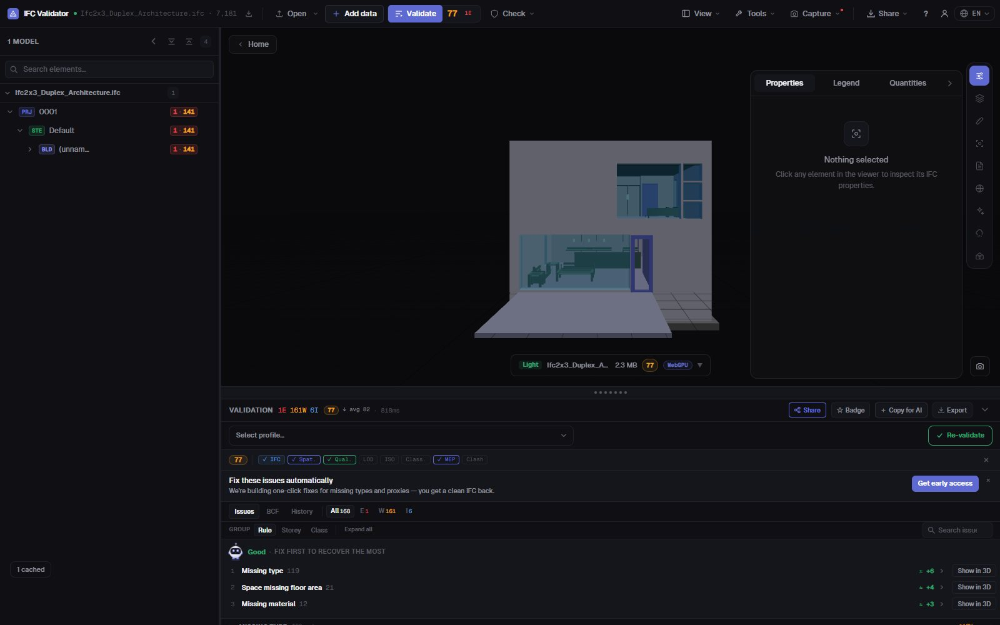
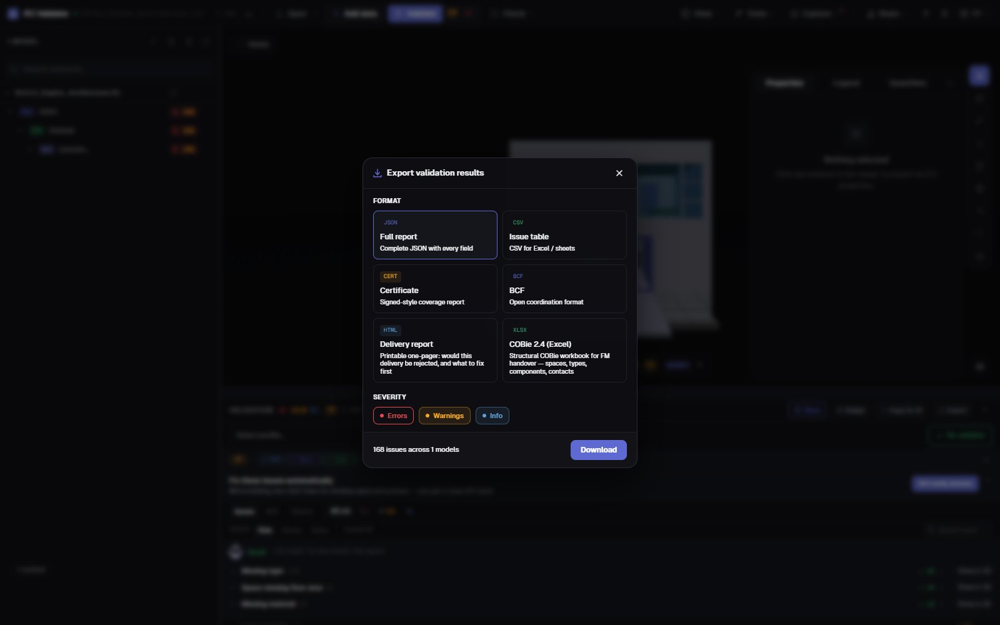

IFC Model Health Check
a score and a report in 30 s
Drop an IFC and get its Health Score from 0 to 100 against 44 quality rules — GUIDs, spatial structure, types, materials, property sets, coordinates — with the three problems costing the most points listed first. Then export a printable delivery report, a certificate, BCF or COBie.
Run the health check — free →No account · Nothing uploaded · Runs in your browser · Free

What you can do
A health check you can hand over
One number for the client, the full list for the author, and the evidence for the CDE.
Health Score 0–100
One number for the model’s data quality, weighted by severity, with an industry average to compare against.
What to fix first
The rules costing the most points, with the points each would recover — and a button to show their elements in 3D.
44 rules + IDS
GUIDs, spatial hierarchy, orphans, types, materials, property sets, units, coordinates, clashes — plus any buildingSMART IDS file.
Printable delivery report
A one-page HTML report — would this delivery be rejected, and what to fix — that prints or saves as PDF from the browser.
Certificate, BCF, COBie
A signed-style coverage certificate, BCF 2.1 issues for the author, CSV/JSON, and a COBie 2.4 workbook.
Nothing uploaded
The check runs in your browser with WebAssembly. Use it under NDA, offline, on any computer.
Screenshots

FAQ
Questions
What is an IFC model health check?
An automatic review of an IFC file’s data quality: structure, identifiers, classification, properties and coordinates. IFC Viewer Online sums it up as a Health Score from 0 to 100 and lists each issue with the element it affects.
Can I get the result as a PDF report?
Yes. Export the “Delivery report”: a printable one-page HTML report with the score, the issue counts and what to fix first. Open it and print or “Save as PDF” from the browser. A JSON certificate, CSV, BCF and COBie are also available.
Do I have to upload the IFC model to check it?
No. Unlike upload-based checkers, the file is opened and checked in your browser; it is never sent to a server. Large models stay on your machine.
What does a good score look like?
90–100 is delivery-ready, 75–89 is fine for coordination with minor fixes, 50–74 needs work before delivery, and below 50 has serious data problems.
Is it free?
Yes, for any use including commercial projects, with no account and no file-size paywall.
Check the model before your client does.
Health Score · What to fix first · Printable report · BCF · COBie
Run the health check — free →